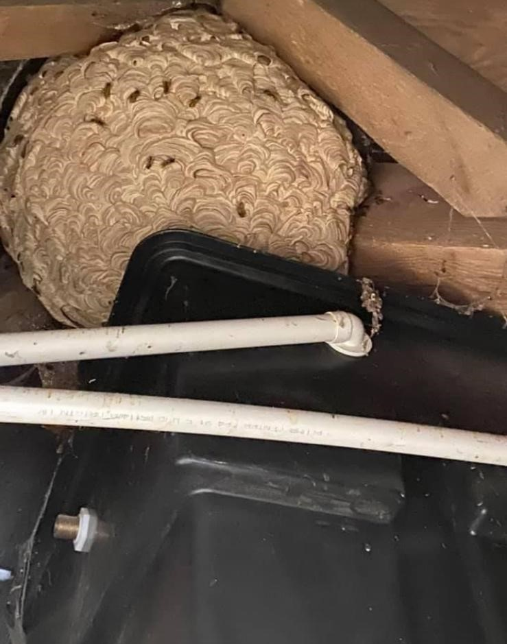
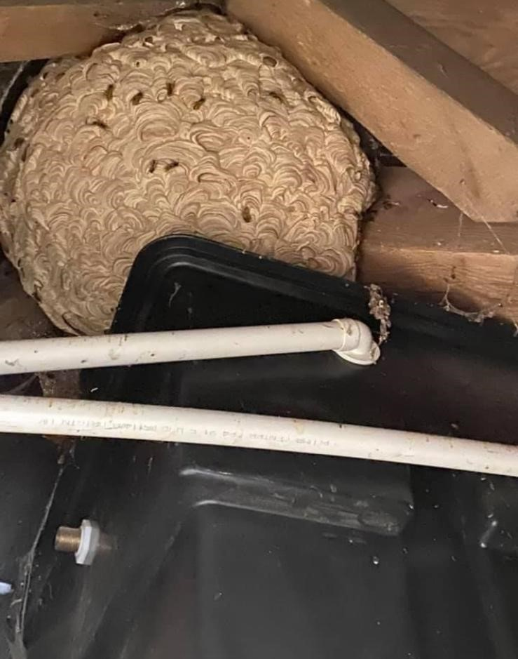

Look out for wasps entering and exiting in a specific location. Just because there are a lot of wasps in a particular area does not necessarily mean there is a nest. Wasps are often on the look out for food near ivy (sweet nectar) and hedges that may contain many aphids. Other signs are noises from the nest, often heard at night coming from attics, normally a scratchy or clicking sound which is often mistaken for mice. This noise is from the wasp larvae and is believed to be made when they are hungry!
 
